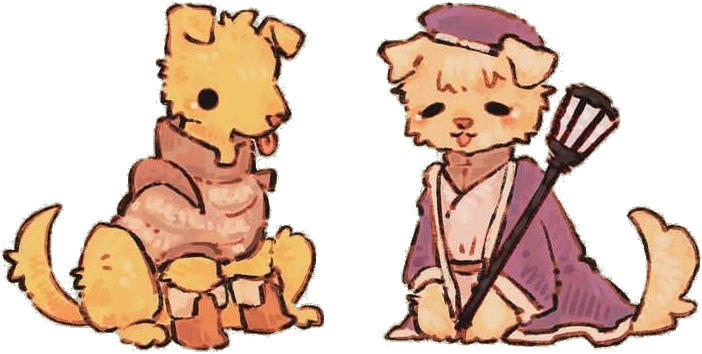

Bem-vindo ao Fluttershy Petshop!
Oh, olá... seja bem-vindo. Fico tão feliz que você veio visitar nosso cantinho dedicado ao cuidado e amor pelos animaizinhos. Aqui, todos os pets são tratados com carinho, delicadeza e muita doçura. Criamos um espaço calmo e confortável, com musiquinhas suaves e cheirinho de flores, para que seu pet se sinta seguro e feliz.
Natureza, ternura e cuidado
Eu sei como eles são especiais... por isso, cada coelhinho, passarinho, cachorrinho ou gatinho recebe atenção como se fosse da minha própria família. Tudo aqui é pensado para respeitar os animaizinhos e a natureza, usamos produtos naturais, reciclamos e valorizamos o bem-estar acima de tudo. Além de cuidar de pets, também temos alguns animaizinhos que adoram conhecer novos amigos. Venha nos visitar... se quiser... só se não for incômodo...